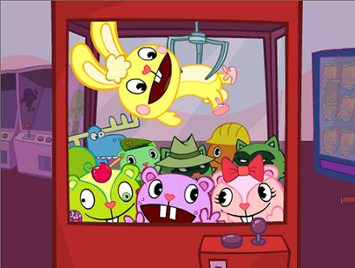

So, yah...I'm alive, in case anyone was wondering. Had a really rough night on Saturday. Wow, who knew about that surprise birthday party?! I had no idea! Wow, it was a really awesome party, I love Gen and Missy for putting it on for me, though the whole process must have been a bit taxing, on everyone. Yah, the last thing I remember is chugging hunch punch because I couldn't beat Bryant at mercy, and then apparently I was running into walls and Gen had to take me home. I woke up the next morning and Matt was trying to put socks on me.
Yeah, so I missed alot. Apparently I got sick and very unresponsive. Ewww, so that must be the bad parts of alcohol...um, yeah. Well, Matt and Gen cleaned up all signs of sickness, it's really amazing, because the LAST time I got that sick, I was cleaning for months and months because sickness got everywhere. Um, so yah, I woke up still drunk, so I recuperated all day long by staying in bed. Around the evening hours I had enough mental stamina to boil some pasta, wash my sheets, and chat w/ Marilia. I called my worried mother and told her everything (I mean, it's not like what I did was illegal!) Everything seems fine now, and I don't think I'll be drinking like THAT for a long while, if ever.
On the table for this week: dealing with my noise ordinance ticket. Yah, so maybe we should have another $125 party at my house?? I don't think so. Also, Wednesday is Mario Kart day! Oh, that will be most excellent. I need to start writing a paper. My computer may be completly fixed! On Saturday, I bought a 30GB hard drive. That's 20 more gigabytes than I had before. I hope that will banish Blue Screen of Death forever and ever. Ok, I'm out.
I updated the Galleries Page tonight. It's probably best to see the new pictures by clicking here. I hear there's a picture out there of me making out with Laura...that would be a delicious addition to my Galleries page ;-)
Ok, want to see something really scary?

This may be old news to some people, but it was shown to me on Monday, and wow, I just don't know what to say. Happy Tree Friends are interesting, to say the least. Doesn't look like something I'd like to really get into, but maybe, I dunno. I really do enjoy the nether regions of the internet...
Mario Kart tomorrow! I may or may not go out tomorrow night. Thinking a night in with friends might be a good idea. I mean, Mario Kart! Thursday, I'm going to be busy dealing with Da Man and Da WoMan (Stefanie), I think Wednesday will be my only break. Oh, when exactly am I going to write my English paper? :-x
It was a very stressful day for me. Alot of things I've been meaning to deal with came up today. Money was one of them, and though that's still largely an issue, when is that EVER going to be resolved? Also, the Lambda magazine subscriptions have needed to be renewed, and Stef and I were able to make that happen. Oh, the pains of being on the inside :-( Also, I went to Municipal Court today! That was very facinating. I'm having a trial for my noise ordinance ticket on January 26th (coincidentally, my sister's birthday). This is going to be very interesting. I'm going to have Jerm and Marilia testify on my behalf. Fun times!
One little bitchy thing...this week at least, I've felt like people don't appreciate me. I'm never really thanked for anything, for any of the things that I do. I don't really make a fuss about it, but when other people are thirsting for recognition, I'm usually reaping my own satisfaction from my efforts. It's just discouraging that people don't notice my efforts. I think that some sense of recognition might go alot toward discouraging any worthless feelings I have. I'm not worthless, I know that, but when other people think that, it just makes me want to quit altogether, pool my efforts toward objects that will value me for who I am. Just thinking...
I hear Cat is sick, and I just want to say that I miss her alot. She's very cool, and she's certainly one of the nicest persons this semester that I've gotten to know alot better. My prayers are with her.
"I'm the party star / I'm popular / I've got my own car / I'm popular / I'll never get caught...
Just a few things. It's so great going to bed at 9 and waking up at 5:30! It's like, ah, refreshing sleep! Oh, yeah, and Missy called while I was sleeping AND she messaged me at like 3:33 about something silly. She is crazy, and certainly not who I was refering to in my bitchy little blurp about appreciation. Gotta love Missy. She said something about dancing for tonight, and that sounds like fun. I love to dance with Missy.